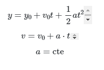
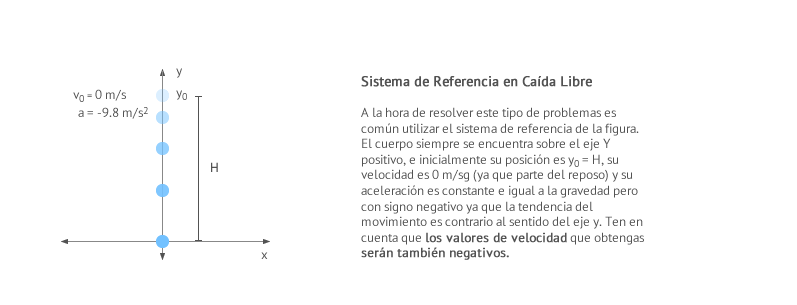

Definicion
De entre todos los movimientos rectilíneos uniformemente acelerados (m.r.u.a.) o movimientos rectilíneos uniformemente variados (m.r.u.v.) que se dan en la naturaleza, existen dos de particular interés: la caída libre y el lanzamiento vertical. En este apartado estudiaremos la caída libre. Ambos se rigen por las ecuaciones propias de los movimientos rectilíneos uniformemente acelerados (m.r.u.a.) o movimientos rectilíneos uniformemente variados (m.r.u.v.):
come se ve en la imagen

En la caída libre un objeto cae verticalmente desde cierta altura H despreciando cualquier tipo de rozamiento con el aire o cualquier otro obstáculo. Se trata de un movimiento rectilíneo uniformemente acelerado (m.r.u.a.) o movimiento rectilíneo uniformemente variado (m.r.u.v.) en el que la aceleración coincide con el valor de la gravedad. En la superficie de la Tierra, la aceleración de la gravedad se puede considerar constante, dirigida hacia abajo, se designa por la letra g y su valor es de 9'8m/s2 (a veces se aproxima por 10 m/s2).
Para estudiar el movimiento de caída libre normalmente utilizaremos un sistema de referencia cuyo origen de coordenadas se encuentra en el pie de la vertical del punto desde el que soltamos el cuerpo y consideraremos el sentido positivo del eje y apuntando hacia arriba, tal y como puede verse en
ejmplo
